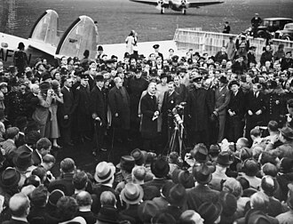
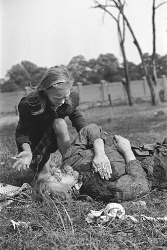

Part IV · Deals & War · Chapter 11
Inherits: Versailles (ch. 6) · Feeds: Holocaust (ch. 12)
Munich → Pact → September 1939
On 30 September 1938, at Heston aerodrome west of London, a sixty-nine-year-old prime minister comes down the steps of an aeroplane and holds a sheet of paper above his head so the cameras can see it. It is not the agreement he signed in Munich the night before; it is a second, one-page declaration he had asked Hitler to sign that morning, and by the evening he is reading it aloud from a window in Downing Street, with the line that outlived him: “peace for our time.” The last chapter ended with a non-intervention agreement being broken by governments that had signed it; this one opens with several of the same governments buying peace with a fresh piece of paper. Eleven months later two armies enter Poland from opposite directions, sixteen days apart, under an agreement whose second half is not published. The six classrooms here share that sequence — even where a date slips, their arrows do not. The arrows are the chapter.

What caused the war — and what does your textbook need Munich and the Pact to be for that answer to hold?
1 The fixed points
Nothing in this list is disputed by any book in the corpus.
- 12 March 1938: German troops enter Austria; the Anschluss is announced the next day.
- 29–30 September 1938: Chamberlain (UK), Daladier (France), Hitler (Germany) and Mussolini (Italy) meet at Munich and sign an agreement transferring the Sudetenland to Germany. Czechoslovakia is not at the table; the USSR is not invited. Transfer runs 1–10 October.
- 15 March 1939: German troops occupy Bohemia and Moravia; Slovakia becomes a separate state under German protection.
- 31 March 1939: Britain publicly guarantees Poland; France follows. Anglo-French–Soviet military talks in Moscow run through August without agreement.
- 23 August 1939: Ribbentrop and Molotov sign a non-aggression treaty in Moscow with a secret additional protocol dividing spheres of interest in eastern Europe.
- 1 September 1939: Germany invades Poland. 3 September: Britain and France declare war on Germany, and not on the USSR.
- 17 September 1939: the Red Army crosses into eastern Poland. The Polish government leaves for Romania the same day.
- 28 September 1939: a German–Soviet Boundary and Friendship Treaty fixes the line between them. Organised Polish resistance ends in early October.
2 The wiring diagrams
All six accounts run through the same nodes: Munich, the failure of collective security, the Pact, 1 September, 17 September. What moves is the arrows. Here is every book’s wiring, three columns wide.
| Classroom | Munich, September 1938 | The Pact, 23 August 1939 | September 1939 |
|---|---|---|---|
| BY · Кошелев 2021 | Appeasement aimed at turning German aggression eastward; England and France betray a country they were obliged to defend. | Appeasement pushes Stalin toward Berlin. The treaty buys almost two years of breathing space; the Western democracies become victims of their own policy. | A liberation campaign begins on 17 September and reunites two peoples. The date is now a state holiday. |
| RU · Чубарьян 2023 | A collusion made behind Prague’s back and over Moscow’s head; collective security dies when France defaults on its treaty with Czechoslovakia. | A forced step. The spheres of interest were initiated by Germany — and a box tells students that historians disagree about the signing. | Germany’s war opens on 1 September; on the 17th troops cross a border, having received an order. |
| UK · Lowe 2013 | Appeasement gets a definition, and Munich the corpus’s only price tag: a third of Czechoslovakia’s territory, almost all its fortifications. | Blame argued four ways with historians named on each side, including the Russian defence that the pact bought time. | Britain and France declare war on Germany. The Soviet invasion arrives in a subordinate clause. |
| IT · Sabbatucci–Vidotto 2004 | A plan presented by Italy that was the German demands almost to the letter; Moscow, kept outside, draws its conclusion. | A coup de théâtre — unscrupulous realism, profitable to both signatories. | Meanwhile the Russians seize the eastern regions, under the secret clauses. |
| US · OpenStax 2022 | Concessions Czechoslovakia “granted,” then a violation — and thereafter a transferable warning with a name. | Nonaggression, with secret protocols allocating territory to the USSR. | Invasion from the west, then from the east; Poland crushed from two sides. |
| DE · bpb 2012 | Applause for Chamberlain in London — and a German coup called off once Munich removed its pretext. | A joint division, exploitation and oppression of Europe; Poland incorporated by its neighbours again. | The Wehrmacht marches. The Soviet leadership orders an entry and an annexation. |
Read down a column and you get a national position; read across a row and you get a working theory of the war. Two of the six run the arrow from the Pact backwards, into Munich — August 1939 is what September 1938 made available. Two run it forwards, into Poland. All six draw it: not one of these classrooms treats 23 August as an accident. The rest of the chapter is what those arrows are made of, and three disputes carry almost all of it — what Munich cost, what Moscow took from it, and who crosses a border on 17 September.
3 What Munich cost
Exactly one book puts a number on it. Norman Lowe’s British textbook defines the vocabulary before it narrates — appeasement gets a numbered section and a dictionary entry: “Appeasement was the policy followed by the British, and later by the French, of avoiding war with aggressive powers such as Japan, Italy and Germany, by giving way to their demands, provided they were not too unreasonable.” Then the bill, with a figure attached: Czechoslovakia lost “70 per cent of her heavy industry, a third of her population, roughly a third of her territory and almost all her carefully prepared fortifications.” No other book in the corpus prices Munich. The other five have a verdict instead.
Whose plan it was is the second dispute, and two books that agree about very little agree here. Lowe calls the four-power plan “produced by Mussolini (but actually written by the German Foreign Office).” The Italian manual — whose own head of government is the man being credited — writes that Chamberlain and Daladier «accettarono un progetto presentato dall’Italia che in realtà accoglieva quasi alla lettera le richieste tedesche», “accepted a project presented by Italy which in reality took up the German demands almost to the letter.” Set both beside the American sentence: “On September 30, they produced the Munich Pact, in which Czechoslovakia granted territorial concessions to Germany, Poland, and Hungary in what has since been called appeasement.” Granted is the grammar of a country that was not in the building, and Lowe supplies what that verb leaves out: “Neither the Czechs nor the Russians were invited to the conference. The Czechs were told that if they resisted the Munich decision, they would receive no help from Britain or France.”
The German booklet counts a third cost and charges it to Germans. It declines the easy verdict on the British first — neither French nor British majorities would have backed a war, and «Chamberlain wurde bei seiner Rückkehr in London mit großem Beifall als europäischer Friedenspolitiker begrüßt», “on his return to London Chamberlain was greeted with great applause as a European politician of peace” — and then turns inward. At least as much blame for the missed chance to stop Nazi expansion, it says, belonged to the officers around Ludwig Beck, who had planned a coup for the event of war over the Sudetenland and cancelled their preparations once Munich removed the pretext. «Eine erfolgversprechende Möglichkeit, Hitler zu stürzen, war damit vertan.» — “A promising opportunity to overthrow Hitler was thereby squandered.” The book with the strongest reason to leave that bill unpaid is the one that prints it.
“The Munich collusion became a synonym for betrayal and disgrace, the crown of unprincipled concessions on the part of England and France.”
RU · Чубарьян, Всеобщая история. Новейшая история 1914–1945, 10 кл. (Просвещение 2023) · extract p. 108The third dispute is about what Moscow took away from the room it was kept out of. Russia’s state textbook is the only book in the corpus that does not call the event an agreement or a conference in its heading: section 4 is «Чехословацкий кризис. Мюнхенский сговор 1938 г.» — the Czechoslovak crisis, the Munich collusion, a word stronger than “deal” and weaker than “conspiracy,” meaning an arrangement reached behind someone’s back. It still grants Britain and France a motive — they “took this step in an attempt to avoid war with Germany” — and then ends the section somewhere else entirely, in the failure of collective security, where the USSR “was ready to render assistance to Czechoslovakia” and France, “following in the wake of British policy, did not fulfil the conditions of the Franco-Czechoslovak mutual assistance treaty.” Belarus states the motive it assigns to London and Paris in plain type: they took a course of “appeasement,” and «Кроме того, они втайне надеялись направить острие немецкой агрессии на восток, против Советского Союза» — “in addition, they secretly hoped to direct the point of German aggression to the east, against the Soviet Union.” A Soviet offer of help to Czechoslovakia “was rejected because of fear of the ‘red danger’.” «Так Англия и Франция предали страну, которую были обязаны защищать.» — “Thus England and France betrayed a country they were obliged to defend.”
The corroboration comes from outside that argument. The Italian manual, a university survey published in Rome with no stake in Moscow’s case, records the same causal step: the Czechoslovaks “had not been admitted to the conference and not even consulted,” and the Soviets, “also kept outside the negotiating table,” drew the conclusion that they could not count on the Western powers and abandoned the policy of alliance with the democracies. Rome and Minsk describe the same inference from the same exclusion. What they differ about is whether it excuses what Moscow did with it.
4 What the Pact was for
Eleven months later the same six books have to explain a document signed by two states that had spent six years naming each other the main enemy. This is where a book’s Munich pays out: what it decided the agreement cost fixes what the Pact is allowed to be.
“23 August 1939 therefore marks a special date: the joint division, exploitation and oppression of Europe by National Socialist Germany and the Stalinist Soviet Union.”
DE · bpb, Informationen zur politischen Bildung Nr. 316, „Nationalsozialismus: Krieg und Holocaust“ (2012) · p. 13The German booklet prints the treaty text and the secret protocol side by side on the page and states what the protocol provided for: «die Zerschlagung Polens und die Aufteilung des Landes zwischen Deutschland und der Sowjetunion» — “the smashing of Poland and the division of the country between Germany and the Soviet Union.” Then it puts 1939 in a series: after the partitions of the late eighteenth century, Poland, which had finally won its independence in 1919, «wurde … nun erneut von seinen Nachbarländern einverleibt» — “was now once again incorporated by its neighbouring countries.” One sentence, two centuries, no comfort for anybody.
Russia’s account of the same signature is the most carefully engineered passage in this chapter. After the deadlocked Moscow talks and a German offer made at their height, two flat declarative sentences take the load: «Пакт о ненападении был вынужденным шагом со стороны СССР» — “the non-aggression pact was a forced step on the part of the USSR” — and, after the list of territories placed in the Soviet sphere, «Разграничение сфер интересов было инициировано Германией», “the delimitation of spheres of interest was initiated by Germany.” The secret protocol is not hidden and not defended; its authorship is assigned. Then the book prints a box telling students that historians disagree, that many “approve” the treaty and the protocol given the concrete historical situation, and that «Некоторые осуждают подписание этих документов, считая, что они нанесли политический и моральный ущерб СССР» — “some condemn the signing of these documents, considering that they inflicted political and moral damage on the USSR.”
Belarus goes further into the argument and further into the sources. «Политика „умиротворения“ подталкивала Сталина к подписанию договора с Германией» — “the policy of ‘appeasement’ pushed Stalin toward signing a treaty with Germany” — and the treaty’s value is a calculation: the Soviet leadership, in no doubt about a coming clash, «получило почти два года передышки», “received almost two years of breathing space.” The paragraph then closes the circuit back to Munich in one line: «В итоге западные демократии стали жертвой собственной политики „умиротворения“ и поощрения фашистского агрессора.» — “In the end the Western democracies became the victim of their own policy of ‘appeasement’ and of encouragement of the fascist aggressor.” Two pages later Koshelev does the thing that turns a verdict into a lesson. He prints Stalin’s radio address of 3 July 1941 — «Мы обеспечили нашей стране мир в течение полутора годов», “we secured our country peace for a year and a half” — beside a passage from Churchill’s war memoirs in the textbook’s own Russian rendering, conceding that if Soviet policy in 1939 «и была холодно расчетливой, то она была также в тот момент в высокой степени реалистичной» — “was coldly calculating, it was also at that moment realistic in the highest degree” — and asks the student to compare the two assessments and explain why they differ.
At the far end of Europe the British book reports that same defence as a live historiographical position: “Russian historians justify the pact on the grounds that it gave the USSR time to prepare its defences against a possible German attack.” Two classrooms that will never agree about Munich are, in that one sentence, handling the same argument — one making it with a Churchill quotation, the other reporting it as somebody else’s. The Italian manual keeps its distance from both, calling the accord between two ideologically opposed states «uno dei più grandi colpi di scena nella storia della diplomazia di ogni tempo» — “one of the greatest coups de théâtre in the history of diplomacy of all time” — and «un gesto di spregiudicato realismo», an act of unscrupulous realism, profitable to both.
One detail separates the books that read the protocol from the books that summarise it, and it does not fall where a reader would expect. Belarus lists the German sphere first and correctly — «„Сферой интересов“ Германии были признаны Западная и Центральная Польша, Литва», “Western and Central Poland and Lithuania were recognised as Germany’s ‘sphere of interest’.” OpenStax writes that “Lithuania, Latvia, Estonia, and parts of eastern Poland were allocated to the USSR,” and Russia’s textbook writes «Прибалтика», the Baltic region, undivided. In the document signed on 23 August, Lithuania was on the German side of the line; it moved into the Soviet sphere only in the treaty of 28 September. The state textbook of Minsk is the precise one here, and the American and Russian books make the same compression in opposite political directions.
5 Close-up · who crosses the border on 17 September
Every one of the six gives 1 September the same subject: Germany.

The disagreement is sixteen days later, and it fits in one sentence per book. On 17 September 1939 the Red Army crossed into eastern Poland; below are the six sentences, ordered from the telling in which nobody crosses anything to the one in which a named authority issues an order and states its purpose. Books whose syllabus does not reach the event — Ukraine 1945–2018, China’s national survey, Sudan’s regional history, Kazakhstan’s national volume — are absent by scope, not by verdict. This is one morning, not the whole war: evidence for one arrow in the diagrams above.
| Classroom | What happens on 17 September 1939 | One-line tag |
|---|---|---|
| BY · Кошелев 2021 |
«В период немецкой кампании в Польше СССР взял под свою защиту население Западной Украины и Западной Белоруссии. Освободительный поход Красной армии, начавшийся 17 сентября 1939 г., привел к воссоединению белорусского народа в составе БССР и украинского народа в составе УССР… Этот день в Беларуси стал государственным праздником — Днем народного единства.» “In the period of the German campaign in Poland, the USSR took under its protection the population of Western Ukraine and Western Belorussia. The liberation campaign of the Red Army, which began on 17 September 1939, led to the reunification of the Belarusian people within the BSSR and the Ukrainian people within the Ukrainian SSR… This day in Belarus became a state holiday — Day of National Unity.” Всемирная история, 11 кл. (БГУ 2021) · extract p. 158 |
A campaign that begins by itself, and a holiday |
| RU · Чубарьян 2023 |
«17 сентября советские войска перешли границу Польши, получив приказ приступить к освобождению Западной Украины и Западной Белоруссии, отошедших к ней по Рижскому договору 1921 г.» “On 17 September Soviet troops crossed the border of Poland, having received the order to proceed to the liberation of Western Ukraine and Western Belorussia, which had passed to it under the Riga Treaty of 1921.” Всеобщая история. Новейшая история 1914–1945, 10 кл. (Просвещение 2023) · extract p. 159 |
An order, and no order-giver |
| UK · Lowe 2013 |
“When the Russians invaded eastern Poland, resistance collapsed. On 29 September Poland was divided up between Germany and the USSR (as agreed in the pact of August 1939).” Mastering Modern World History, 5th ed. (Palgrave Macmillan 2013) · extract p. 145 |
Invasion in a subordinate clause |
| IT · Sabbatucci–Vidotto 2004 |
«Frattanto i russi, in base alle clausole segrete del patto Molotov-Ribbentrop, si impadronivano delle regioni orientali del paese.» “Meanwhile the Russians, on the basis of the secret clauses of the Molotov–Ribbentrop pact, were seizing the eastern regions of the country.” Il mondo contemporaneo (Laterza 2004) · extract p. 467 |
Seizure, under a clause number |
| US · OpenStax 2022 |
“About two weeks later, Soviet forces invaded Poland from the east. Crushed from two sides, Poland essentially ceased to exist.” World History, Volume 2: from 1400 (OpenStax 2022) · p. 532 |
Crushed from two sides |
| DE · bpb 2012 |
«Am selben Tag gab die sowjetische Führung den Befehl, gemäß dem mit Hitler geschlossenen Pakt in Ostpolen einzumarschieren und dieses Gebiet zu annektieren.» “On the same day the Soviet leadership gave the order to march into Eastern Poland in accordance with the pact concluded with Hitler, and to annex this territory.” Informationen zur politischen Bildung Nr. 316 (bpb 2012) · p. 16 |
Order, march in, annex |
In the Belarusian row the actors are named and the border is not. The USSR is there, and it takes a population “under its protection”; the Red Army is there, and its campaign leads to a reunification. What goes missing between them is the crossing itself, the order-giver, and Polish territory as a place entered — Poland survives only as a time-marker in the previous clause, “in the period of the German campaign in Poland.” The subject of the main sentence is «освободительный поход», a liberation campaign, and its verb is «начавшийся», which began; campaigns that begin, rather than armies that are sent, do not require a sender. Agency is not deleted here so much as redirected — away from entering a country, toward protecting and reuniting people — and the objects are abstract nouns of gain: a reunification, and a state holiday. That holiday is younger than it reads: Belarus created the Day of National Unity in 2021, the year this edition went to print. This classroom does not only narrate 17 September; it still marks it.
Russia’s row restores an actor and a border — troops cross — and then removes the one participant a reader would ask about. «Получив приказ» is an adverbial participle: having received the order. Orders are received in this sentence; nobody gives one. Compare the same book on 1 September, one page earlier, where agency is dense and specific: Hitler’s desire, the “Weiss” plan under development since April, the raid at 4:30 a.m., the frontal advance at 4:45. The grammar knows how to name a decision-maker; on 17 September it declines to. And the clause that follows does the other half of the work — the territories “had passed to it under the Riga Treaty of 1921,” which converts a border crossing into the reversal of an earlier one.
The British, Italian and American accounts name progressively more of the act. Lowe puts the invasion in a subordinate clause — “When the Russians invaded eastern Poland, resistance collapsed” — so the sentence’s business is Polish resistance, and Soviet action is the circumstance in which it fails. Sabbatucci and Vidotto make the Russians the subject of a main clause and attach the legal instrument: they seized the eastern regions “on the basis of the secret clauses.” OpenStax names the act and its result, and adds the asymmetry most books leave the reader to notice: Britain and France declared war on Germany “but not on the Soviet Union.” The German row is the most agentive, and what it adds is a purpose: it is the only row in which the entry has a stated goal — «dieses Gebiet zu annektieren», to annex this territory — rather than a stated beneficiary.
“The beginning of military operations against Poland was presented as a defence of the country. The word ‘war’ itself was not mentioned; Hitler’s speech of 1 September spoke of ‘securing the safety of the Third Reich and its rights’.”
RU · Чубарьян (2023) · Gleiwitz box · extract p. 158That box is the sharpest passage about language in this entire chapter, and it belongs to the Russian textbook. It walks students through Operation “Canned Goods” — the provocateurs who “seized” a German radio station near the Polish border, the broadcast in Polish, the body of a murdered prisoner left in Polish uniform — and then names the mechanism: an attack presented as a defence, with the word war withheld. Sixteen days and one page later, the same book describes a border crossing as the receipt of an order to begin a liberation. Both things are true of the same textbook, and the second is not evidence that the first was insincere. It is evidence that the analysis of naming is easiest to teach about somebody else.
One consequence of the line drawn on 28 September belongs here, as a count rather than a ladder. Polish officers, police and officials who ended the campaign on the Soviet side were held through the winter; in March 1940 the Soviet leadership approved shooting them, and roughly 22,000 men were killed that April and May at Katyn forest near Smolensk, at Kalinin and at Kharkiv. German teams opened the graves in April 1943 and named the Soviets; Moscow named the Germans until 1990, when the USSR acknowledged that the NKVD had done it. Two of the six books say so. The German booklet: «15 000 polnische Offiziere wurden im April und Mai 1940 von der sowjetischen Geheimpolizei erschossen, darunter rund 4500 im Wald von Katyn» — “15,000 Polish officers were shot in April and May 1940 by the Soviet secret police, including around 4,500 in the Katyn forest.” The Italian manual folds it into a parenthesis: «fu in questo periodo che si consumò, per opera dei sovietici, il massacro di oltre 4000 ufficiali polacchi fatti prigionieri, i cui corpi, gettati in fosse comuni, sarebbero stati scoperti dai tedeschi, nel ’43, nella foresta di Katyn, in Russia» — “it was in this period that there was consummated, through the work of the Soviets, the massacre of over 4,000 Polish officers taken prisoner, whose bodies, thrown into mass graves, would be discovered by the Germans, in ’43, in the forest of Katyn, in Russia.” Britain’s, America’s, Belarus’s and India’s books contain the word nowhere. Two in-scope narrators out of seven is, by this book’s own rule, a signature topic rather than an avoidance signal — most curricula cut Katyn, and these two made room. Russia’s book has no Katyn either. What it has, a few lines below the order to begin a liberation, is a sentence about the prisoners — tens of thousands of Polish servicemen interned and captured, of whom «Большинство из них было отпущено по домам, а некоторые, из наиболее антисоветски настроенных, расстреляны», “the majority of them were released home, and some, of the most anti-Soviet minded, were shot.” Who shot them is not in the sentence.
6 Credit where due
Fairness, paid in installments
Lowe (UK) takes this chapter, on method. Section 5.6 does not answer “who caused the war”; it stages the answer four times — the appeasers, the USSR, Hitler, and A. J. P. Taylor’s dissent that Hitler expected at most a short war with Poland — attaches historians’ names to each, reports its rivals’ case in their own terms including the Russian defence of the Pact, and prints Richard Overy’s inconvenient line that “war in 1939 was declared by Britain and France on Germany, and not the other way round.” It is the only book here that hands a schoolchild the argument instead of the verdict. Three debts beside it, one line each. Koshelev (BY) sets Stalin’s 1941 radio defence of the Pact next to Churchill’s memoir and asks students to explain why the two differ — and is the only book here that reproduces the 23 August spheres correctly, Lithuania included. Чубарьян (RU) earns the Gleiwitz box, the corpus’s most detailed account of how a state renames an attack, down to the withheld word. And bpb (DE), credited elsewhere in this book for other things, earns one exactness that costs it something here: a German federal agency is under no obligation to be precise about Soviet agency on 17 September, and it names the order, the instrument and the annexation anyway.
7 Where this stops being true
Limits
Six books cover this chapter’s events. Four do not, and their zeros are syllabus, not avoidance: Ukraine’s 11th-grade volume begins in 1945 (its only two hits for «Мюнхен» are a university in Munich and the 1972 Olympics), China’s state survey is a Chinese-history course with no 慕尼黑 or 波兰 at all, Sudan’s secondary history stays with the Nile valley and Palestine, and Kazakhstan’s volume is national history and is never a peer column in this book.
India is the exception that counts. NCERT’s Themes in World History is a world-history course covering the period, and it returns zero hits for Munich, Sudetenland, appeasement, Chamberlain, Molotov and Ribbentrop; the Second World War appears in the timeline as “Second World War (1939–45).” Under the corpus rule — six of seven in-scope narrators cover a topic — that is an avoidance signal rather than a curriculum norm. What it avoids is Europe, not war.
Three findings are kept verbatim because errors are data. Lowe dates the secret agreement to divide Poland to 24 August, where the other five books and the document itself say 23 August — defensible, since the signing ran past midnight in Moscow, and worth a student’s attention either way. OpenStax places Lithuania in the Soviet sphere as of 23 August, which the protocol of that date does not, and dates the Soviet entry “about two weeks” after 1 September, which is sixteen days. And in the Belarusian extraction the sentence “this day in Belarus became a state holiday” sits immediately after a sentence about the Baltic republics rather than after the 17 September sentence it refers to; that may be a column-layout artifact of the extraction rather than the printed page, and the printed page should be checked before the point is pressed.
None of these classrooms is a military history of the September campaign, and none is a legal history of the protocol. If you want the order of battle, or the text of the 28 September maps, you will leave all six unsatisfied.
8 Receipts
- RU — А. О. Чубарьян, Всеобщая история. Новейшая история 1914–1945 гг., 10 кл. (Просвещение 2023): §4 «Чехословацкий кризис. Мюнхенский сговор 1938 г.» and the Pact, extract pp. 107–110; war outbreak, Gleiwitz box, 17 September and the Polish prisoners, extract pp. 156–160.
- BY — В. С. Кошелев и др., Всемирная история, 11 кл. (БГУ 2021): §20 “appeasement,” Munich and the Pact, extract pp. 149–154, incl. the Stalin (3 July 1941) and Churchill source box; §21–22 the liberation campaign and Day of National Unity, extract pp. 157–158.
- DE — Bundeszentrale für politische Bildung, Informationen zur politischen Bildung Nr. 316, „Nationalsozialismus: Krieg und Holocaust“ (2012): Munich and Beck, pp. 9–11; the Pact of 23 August, p. 13; 1 September and Wieluń, pp. 15–16; the Soviet order and the 28 September treaty, p. 16; the deportations and the Katyn figures, p. 20. The booklet is set in three columns and its Wieluń pages are a reprinted newspaper article by Joachim Trenkner (Die Zeit, 1 September 2009), not the agency’s own prose — used here only for the invasion timeline, never as the booklet’s voice.
- IT — G. Sabbatucci & V. Vidotto, Il mondo contemporaneo (Laterza 2004): “Gli accordi di Monaco e il sacrificio della Cecoslovacchia,” extract pp. 416–421; the pact, 1 September, the seizure of the eastern regions and the Katyn parenthesis, extract pp. 466–467; summary pp. 493–494.
- UK — Norman Lowe, Mastering Modern World History, 5th ed. (Palgrave Macmillan 2013): 5.4 “Appeasement,” 5.5 Czechoslovakia and Poland, 5.6 “Why did war break out? Were Hitler or the appeasers to blame?”, extract pp. 127, 132–135; Poland defeated and the phoney war, extract pp. 144–145; the Munich analogy at work on Korea and Suez, extract pp. 217, 341.
- US — OpenStax, World History, Volume 2: from 1400 (2022), ch. 13 “The Causes and Consequences of World War II”: Munich Conference and Pact, pp. 528–529; the Munich Analogy, p. 531; Nonaggression Pact, invasion and the Soviet entry, p. 532.
- The word that got to China first. One book in the corpus draws no arrow in this chapter at all, and it is the one that kept the word: on the same NCERT page that gave chapter 1 its “triangular trade,” Indian students read that the eighteenth-century partition of Poland so preoccupied Chinese reformers that “by the late 1890s it came to be used as a verb: ‘to Poland us’ (bolan wo)” — four decades before September 1939 partitioned Poland a fourth time.
- 0 in-scope IN — NCERT, Themes in World History, Class XI: no hits for Munich · Sudetenland · appeasement · Chamberlain · Molotov · Ribbentrop · Katyn; Second World War appears only in the timeline.
- out of scope UA (1945–2018) · CN (Chinese national survey) · SD (1821–1948, regional) · KZ (national history — not a world-history column).
- Method. Machine translation was used for discovery only. Every non-English line above was pulled from the original-language extraction, joined across line breaks and hyphenation, and hand-translated here. Page numbers follow the extractions and the dossiers; before any of these quotes hardens into a claim, the printed page should be reopened. Research maps:
notes/munich-1938.md,notes/sept-1939.md,notes/katyn.md.
9 Munich, still in service
Five of the six books close Munich when the tanks move: an agreement, a violation, a verdict, and on to September. The American one keeps walking, two pages past the event, and the sentence it walks into is why this chapter is an argument and not a date.
That is a textbook handing over a piece of equipment. Munich stops being a room in Bavaria and becomes a move available in an argument — and the equipment has a service history. In June 1950, on the flight back to Washington after the first reports from Korea, Harry Truman was thinking about the 1930s: Manchuria, Ethiopia, Austria, and what had followed from letting each one pass. He wrote it down six years later in the second volume of his memoirs, Years of Trial and Hope. From there “no more Munichs” kept turning up in the mouths of people who wanted opposite things — over Suez in 1956, over Vietnam through the 1960s, and in every decade since.
The editions on this desk are dated 2004, 2012, 2013, 2021, 2022 and 2023, and two of them issue opposite equipment out of the same three days. OpenStax, whose 2022 edition names “Putin’s Russia” in the same sentence as Hitler’s Germany, points Munich forward, at any state that invades another. Koshelev, printed in Minsk in 2021, points it backwards, at the powers who made the deal: appeasement “pushed Stalin toward signing a treaty with Germany.” One node, two arrows leaving it in opposite directions — a warning against dealing with an aggressor, and an explanation of why a deal with an aggressor had to be made.
This is the rare thread that reaches a reader without a map or a museum, because the word got out of the classroom. Anyone who has followed an argument about a current war has heard someone called an appeaser, and heard someone else answer that Munich is a bad analogy for this one. The word arrives already loaded. Which way it is loaded is not decided by a textbook — adults acquire their politics from more places than a school shelf — but both loadings are in print, in current editions, for sixteen-year-olds, and a classroom is where a use of a word first gets the authority of a lesson attached to it.
Search all eleven books for Munich and six carry the conference; five have no trace of it. Of the six, two teach it as something transferable rather than as an event with a verdict attached. OpenStax names the instrument — “the Munich Analogy” — and points it at the present. Lowe never names it and shows it working twice, decades downstream: on Truman’s decision over Korea, “Some Americans saw the invasion as similar to Hitler’s policies during the 1930s. Appeasement of the aggressors had failed then, and therefore it was essential not to make the same mistake again”; and on Suez, where Hugh Gaitskell “agreed that Nasser must not be appeased in the way that Hitler and Mussolini had been appeased in the 1930s.” The other four — Russia, Belarus, Germany, Italy — argue hard about what Munich caused, and end it in 1939. Two classrooms in eleven tell a student that the word will be handed to them again, outside the exam.
In all six books the arrows end at a divided Poland. The next chapter begins inside the occupations that followed, where borders, lists and administrative orders acquired human objects.
Now look up what your textbook calls it.